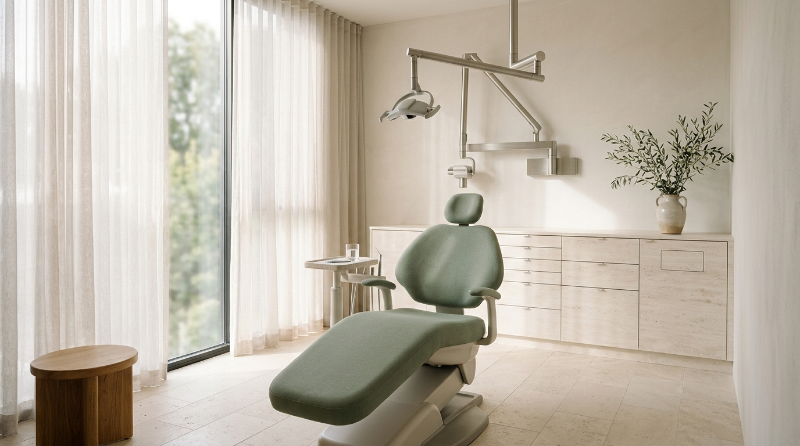

Lenguaje claro sin tecnicismos
Cada área describe en términos comprensibles el propósito de la consulta preventiva, correctiva o restauradora.

Clínica odontológica de ejemplo · Cuenca
Alba Dental es una clínica ficticia diseñada por AV·STUDIO para ilustrar cómo un consultorio dental presenta sus áreas de atención, tiempos orientativos y solicitud responsable de valoración sin tecnicismos confusos.
Filosofía de atención
Un sitio web odontológico efectivo debe transmitir tranquilidad, orden y claridad. Este ejemplo organiza la información clínica sin promesas exageradas, priorizando la comprensión del paciente antes de visitar el consultorio en Cuenca.
Cada área describe en términos comprensibles el propósito de la consulta preventiva, correctiva o restauradora.
Se detallan duraciones estimadas de valoración y pasos habituales para que el visitante asista informado.
No se publican garantías clínicas ni resultados estéticos predeterminados; toda evaluación real requiere examen presencial.
Detalle interactivo por tratamiento
Selecciona una ficha para revisar su duración referencial, enfoque clínico ilustrativo y etapas habituales, con acceso directo a solicitar información.
Secuencia informativa referencial
Referencia informativa de ejemplo; los tiempos y planes definitivos se determinan en consulta real.
Áreas de atención & estructura clínica
Cada especialidad enlaza directamente con su ficha de tratamiento. En una implementación real, este bloque alberga la trayectoria verificable de los profesionales titulares sin perfiles ni matrículas ficticias.
Prevención, diagnóstico clínico, profilaxis y restauraciones conservadoras.
Corrección progresiva de alineación dental y mordida funcional.
Soluciones protésicas diseñadas para devolver comodidad al masticar.
Aclaramiento dental supervisado y armonización conservadora de sonrisa.
Experiencia informativa del paciente
Este recorrido explica la experiencia de consulta previa: no realiza diagnóstico en línea, no almacena historias clínicas ni confirma turnos reales en agenda médica.
Explora las áreas preventivas, ortodónticas, protésicas o conservadoras para identificar el motivo general de interés.
Revisa la duración orientativa de la primera valoración y los pasos habituales de atención descritos en cada ficha.
Completa los datos básicos en horario 24h para validar y generar el mensaje de prueba hacia AV·STUDIO.
Espacios y arquitectura clínica
Fotografías ilustrativas de ambientes odontológicos; no representan instalaciones ni equipamiento real verificado de la marca ficticia.
Información útil
Aclaraciones basadas exclusivamente en los datos informativos de esta demostración comercial.
La demostración organiza cuatro áreas referenciales: Odontología General y Preventiva, Ortodoncia y Alineación Dental, Rehabilitación Oral y Estética Dental Conservadora.
Se utiliza como referencia el sector Av. Solano / El Ejido en Cuenca, Azuay, con horario demostrativo en formato 24h de lunes a viernes de 08:30 a 18:30 y sábados de 09:00 a 13:00.
Odontología General indica entre 30 y 45 minutos por consulta; Ortodoncia señala una valoración inicial de 40 minutos; Estética Dental Conservadora de 45 a 60 minutos por sesión; y Rehabilitación Oral según plan diagnóstico presencial.
No. Alba Dental es un sitio demostrativo de AV·STUDIO: no guarda información médica sensible, no ofrece teleodontología ni agenda turnos reales; solo valida el formulario para preparar un mensaje de prueba hacia WhatsApp.
Solicitar valoración & ubicación
Selecciona la especialidad deseada y una franja horaria en formato 24h para validar los campos y generar el mensaje demostrativo hacia WhatsApp de AV·STUDIO.
Los campos con * validan el resumen demostrativo.